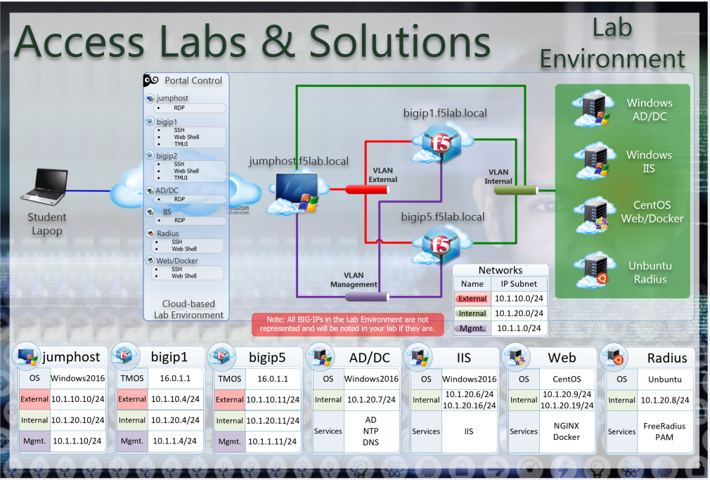

F5 Identity and Access Management Solutions > 300 Series: Advanced Use Cases & Solutions Source | Edit on
Environment Overview¶
UDF Blueprint¶
Access Labs & Solutions (Version 16.0)
Lab Topology¶

The following components have been included in your lab environment:
Note
BIG-IP2 and BIG-IP6 are offline by default. Only boot these BIG-IPs when the lab specifies to do so.
- 4 x F5 BIG-IP VE (v16.0)
- 1 x Windows Server 2016 - jumphost.f5lab.local
- 1 x Windows 2016 Server - dc1.f5lab.local (AD, CA, OCSP & internal DNS)
- 1 x Windows 2016 Server - iis.f5lab.local
- 1 x Centos 7 - web.f5lab.local
Lab Components¶
The following table lists VLANS, IP Addresses and Credentials for all components:
| Component | VLAN/IP Address(es) | Credentials | |
|---|---|---|---|
| jumpbox.f5lab.local |
|
Username | Password |
| f5lab\user1 | user1 | ||
| f5lab\user2 | user2 | ||
| f5lab\admin | admin | ||
| bigip1.f5lab.local |
|
admin | admin |
| bigip2.f5lab.local |
|
admin | admin |
| bigip5.f5lab.local |
|
admin | admin |
| bigip6.f5lab.local |
|
admin | admin |
| dc1.f5lab.local |
|
admin | admin |
| iis.f5lab.local |
|
admin | admin |
| web.f5lab.local |
|
admin | admin |
| radius.f5lab.local |
|
admin | admin |